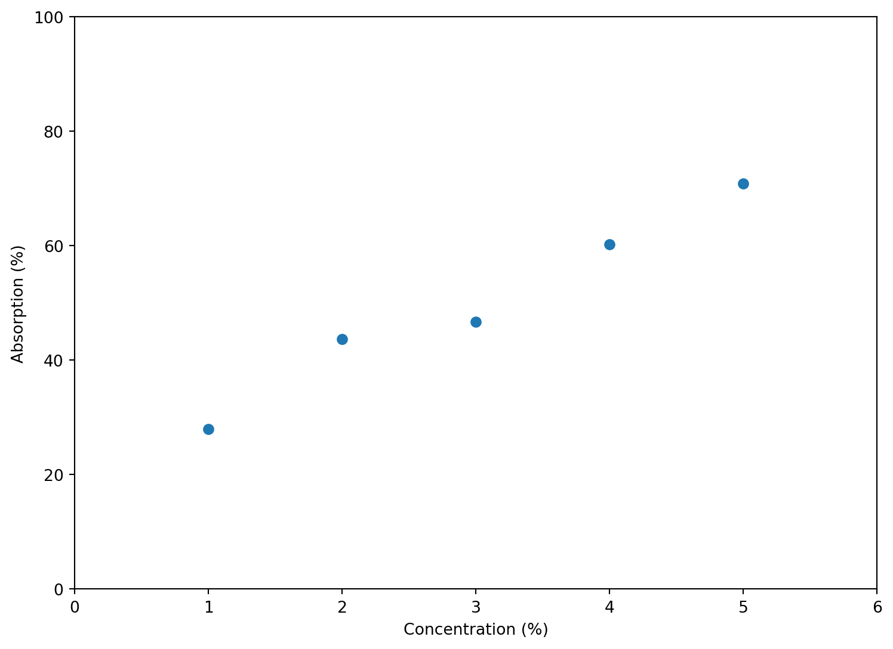
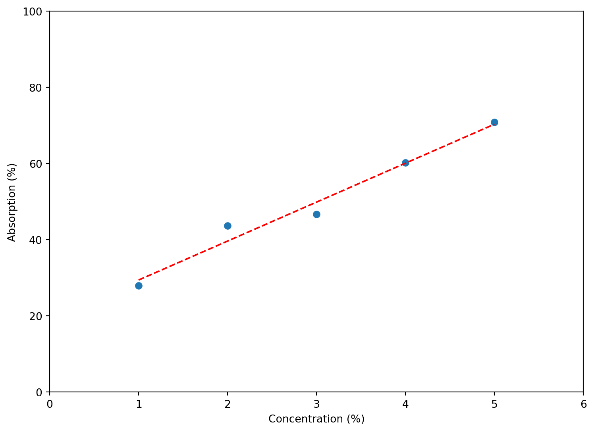

import pandas as pd
import numpy as np
import matplotlib.pyplot as plt
from matplotlib.figure import Figure
from sklearn.svm import SVC
from sklearn.linear_model import LinearRegressionFish Data Analysis
imports
mock Data
xVal = np.array(range(1, 6), dtype='float')
yVal = 50 + 12 * (xVal - 3) + np.random.normal(0, 4, len(xVal))
fig: Figure = plt.figure()
ax = fig.add_axes([0, 0, 1, 1])
ax.scatter(xVal, yVal)
ax.set_xlim(0, 6)
ax.set_ylim(0, 100)
ax.set_xlabel('Concentration (%)')
ax.set_ylabel('Absorption (%)')
plt.show()
linReg = LinearRegression()
linReg.fit(xVal.reshape(-1, 1), yVal)
fig: Figure = plt.figure()
ax = fig.add_axes([0, 0, 1, 1])
ax.scatter(xVal, yVal)
ax.plot(xVal, linReg.predict(xVal.reshape(-1, 1)), color='red', linestyle='dashed')
ax.set_xlim(0, 6)
ax.set_ylim(0, 100)
ax.set_xlabel('Concentration (%)')
ax.set_ylabel('Absorption (%)')
plt.show()
Fish Dict Construction
fish_raw = pd.read_csv('fish.csv')
fish_dict = {
'data' : np.array(fish_raw.iloc[:, :-1]),
'target' : np.array((fish_raw.iloc[:,-1] + 1) / 2),
'feature_names' : fish_raw.columns[:-1],
'target_names' : ['Salmon', 'Sea bass']
}Split Data
sea_bass_data = []
salmon_data = []
for data, target in zip(fish_dict['data'], fish_dict['target']):
if target == 0:
salmon_data.append(data)
else:
sea_bass_data.append(data)
salmon_data = np.array(salmon_data)
sea_bass_data = np.array(sea_bass_data)Scatter Plot
plt.scatter(fish_dict['data'][:, 0], fish_dict['data'][:, 1], c=fish_dict['target'], cmap='coolwarm')
plt.show()Histograms
fig, (bright_ax, length_ax) = plt.subplots(1, 2, figsize=(10, 5))
for ax, feature_index, feature_name in zip([bright_ax, length_ax], [0, 1], fish_dict['feature_names']):
ax.hist(salmon_data[:, feature_index], alpha=0.5, bins=20, label='Salmon')
ax.hist(sea_bass_data[:, feature_index], alpha=0.5, bins=20, label='Sea Bass')
ax.set_xlabel(feature_name)
ax.set_ylabel('Frequency')
ax.set_title(f'Distribution of {feature_name}')
ax.legend(loc='upper right')
plt.tight_layout()
plt.show()Boxplots
fig, (bright_ax, length_ax) = plt.subplots(1, 2, figsize=(10, 5))
for ax, feature_index, feature_name in zip([bright_ax, length_ax], [0, 1], fish_dict['feature_names']):
ax.boxplot([salmon_data[:, feature_index], sea_bass_data[:, feature_index]])
ax.set_xticklabels(['Salmon', 'Sea Bass'])
ax.set_xlabel('Species')
ax.set_ylabel(feature_name)
ax.set_title(f'Boxplot of {feature_name}')
plt.show()
SVM
svm_model = SVC(kernel='rbf', C=12, gamma=1.8)
svm_model.fit(X=fish_dict['data'], y=fish_dict['target'])
svm_model.score(fish_dict['data'], fish_dict['target'])0.9461538461538461Visualize SVM
fig = plt.figure()
ax = fig.add_axes([0, 0, 1, 1])
ax.scatter(fish_dict['data'][:, 0], fish_dict['data'][:, 1], c=fish_dict['target'], cmap='coolwarm')
xlim = ax.get_xlim()
ylim = ax.get_ylim()
# Create a grid of points in the plot to evaluate the model
xx = np.linspace(xlim[0], xlim[1], 30)
yy = np.linspace(ylim[0], ylim[1], 30)
YY, XX = np.meshgrid(yy, xx)
xy = np.vstack([XX.ravel(), YY.ravel()]).T
Z = svm_model.decision_function(xy).reshape(XX.shape)
# Plot decision boundary and margins
ax.contourf(XX, YY, Z, levels=0, alpha=0.5,
colors=['blue', 'red'])
ax.contour(XX, YY, Z, colors='k', levels=[-1, 0, 1], alpha=0.5,
linestyles=['--', '-', '--'])
# Plot support vectors
ax.scatter(svm_model.support_vectors_[:, 0], svm_model.support_vectors_[:, 1], s=100,
linewidth=1, facecolors='none', edgecolors='k')
plt.title("Non-Linear SVM Decision Boundary (RBF Kernel)")
plt.show()